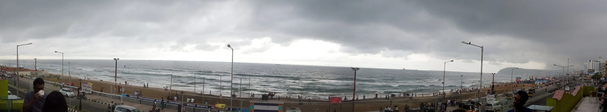

Day 1 · Stop 03 · City beach
🕒 Day 1 · 4:00 – 6:30 PM
Rama Krishna Beach
RK Beach on Beach Road
Vizag's best-known seafront, along Beach Road on the Bay of Bengal.
- Named after the Ramakrishna Mission
- The Beach Road promenade
- Sunrise over the Bay of Bengal

Swipe along the promenade →About Rama Krishna Beach
Ramakrishna Beach, better known as RK Beach, is the city's main seafront on the Bay of Bengal, running along Beach Road near Dolphin's Nose. It takes its name from the Ramakrishna Mission ashram beside the beach.
The promenade is lined with lamp posts, food stalls and landmarks: the Kali Temple, the INS Kursura Submarine Museum and the TU-142 aircraft museum are all within a short walk.
It's at its best at sunrise, when the sun comes up straight out of the sea, and in the evening, when Beach Road lights up.
What we'll see
- Sunrise straight out of the sea
- An evening walk along the lit-up Beach Road
- Street food and chai on the promenade
- Museums and memorials a few steps away
Photo gallery


Crew plan · Day 1 · Stop 3 of 8
4:00 – 6:30 PM
Evening of Day 1: reels on the promenade, chai and street food, with the submarine right next door.
Open in Google MapsTips
- The currents are strong: paddle, don't swim.
- Come back after dark for the Beach Road lights.
- Weekend evenings get crowded.